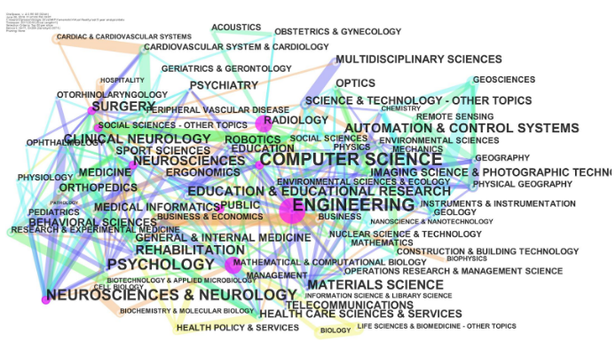
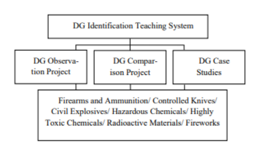

ENG0018 Computer Laboratory 2023/24
Student URN: 6803167
Applications of Virtual Reality beyond recreational activities
Abstract
Virtual Reality is well known for its use in gaming and other forms of recreational activities,
and if it is not being used for personal enjoyment, it is typically linked to stereotypical STEM related fields of occupation.
However, while virtual reality might have a predominant use within the fields of computer science and other STEM related subjects,
there are, in fact, other uses for it outside of these areas. As technology advances, more and more research is going into the potential
applications of virtual reality, leading to an increase in papers on the topic along with more experiments being performed on its uses.
What is Virtual Reality?
Barker’s article (1993)[1] defined Virtual Reality as:
“A VR system is a sophisticated multimedia environment in which users are exposed to, and can participate in,
surrogate tacto-audio-visual experiences. These experiences are created by means of a computer system to which are
attached special types of peripheral device, enabling users to interact with the real and artificial objects that
exist within the interaction environment.”
Increase in literary use of Virtual Reality
The use of virtual reality has been increasing at a rapid rate throughout these last few years.
Though known primarily for its use of recreational activities such as gaming, the potential, and in some cases actual,
uses for this technology are far more diverse. Virtual reality has been expanding beyond the field of Computer Science,
first into other similarly related fields such as Engineering or Robotics, yet in more recent years it can be seen in
the fields of healthcare, architecture or even education.
Table 1 and Figure 1 both show the increase in literature of virtual reality in fields outside of computer science.
Table 1 [2] : Table cited from Cipresso, Giglioli, Mariano and
Guiseppe’s article (2018) on Virtual and Augmented Reality research.
Category statistics from the WoS for the entire period and the last 5 years.
| % |
Frequency |
Subject category (for all the period) |
| 42,15 |
9131 |
Computer Science, 1990–2016 |
| 28,66 |
6210 |
Engineering, 1990–2016 |
| 8,21 |
1779 |
Psychology, 1990–2016 |
| 7,15 |
1548 |
Neurosciences and Neurology, 1992–2016 |
| 6,55 |
1418 |
Surgery, 1992–2016 |
| 5,85 |
1267 |
Automation and Control Systems, 1993–2016 |
| 4,80 |
1040 |
Neurosciences, 1992–2016 |
| 4,74 |
1027 |
Imaging Science and Photographic Technology, 1992–2016 |
| 4,30 |
931 |
Education and Educational Research, 1993–2016 |
| 3,92 |
849 |
Robotics, 1992–2016 |
| % |
Frequency |
Subject category (for the last 5 years) |
| 29,80 |
2311 |
Computer Science, 2011–2016 |
| 25,44 |
1973 |
Engineering, 2011–2016 |
| 11,10 |
861 |
Neurosciences and Neurology, 2011–2016 |
| 9,32 |
723 |
Psychology, 2011–2016 |
| 7,70 |
597 |
Surgery, 2011–2016 |
| 7,53 |
584 |
Neurosciences, 2011–2016 |
| 6,02 |
467 |
Education and Educational Research, 2011–2016 |
| 5,54 |
430 |
Rehabilitation, 2011–2016 |
| 4,42 |
343 |
Clinical Neurology, 2011–2016 |
| 3,92 |
304 |
Materials Science, 2011–2016 |
Figure 1 [2] : Figure cited from Cipresso, Giglioli,
Mariano and Guiseppe’s article (2018) on Virtual
and Augmented Reality research.

What does this increase in literary articles mean?
The increase in literary articles on the topic of Virtual Reality implies the
emergence of various new applications in the field, or at least research into
new ways of utilizing this ever evolving technology. According to Figure 1,
virtual reality is still most commonly being researched in STEM related fields,
however one can see that along the edges of the word map other fields such as:
Geography or Hospitality.

Example One of a practical application of Virtual Reality
Hutabarat, Oyekan, Turner, Tiwari, Prajapat, Gan and Waller’s (2016) [3]paper
talks about a practical use of virtual reality in being able to improve the
simulation capabilities in the field of manufacturing and smart decision making.
The paper opens with a breakdown of the different components that they would
need to make thispossible, and about how with recent advancements in
technology the price of some necessary equipment has fallen. This would therefore
mean that one of the limiting factors that prevents a lot of technological
advancements, a lack of affordable parts, would no longer be as big of an issue.
The table from Hutabarat, Oyekan, Turner, Tiwari, Prajapat, Gan
and Waller’s (2016)[3] paper compares different components that they could
use and the affordability of them. Not just that of monetary expenditure
but also potential advancements and ability to fit the unique criteria
required.
| A/B |
A to B affordances |
B to A affordances |
| DES/VR |
New methods to visualize the complexity of shop floor behavior |
Novel DES authoring approaches |
| DES/RGBD |
Automated machine vision setup |
Automated update of events |
| RGBD/VR |
Real-time updates of workspace changes |
Immersive visualization of workspaces |
Example Two of practical application of Virtual Reality
Table 3, cited from Dai (2023)[4] on Application of Virtual Reality Technology in
Practical Teaching in the Police Academy, shows the increase of student
satisfaction across a variety of characteristics in teaching.
| Questions |
Experimental Group |
Control Group |
| 1. This way of teaching makes learning more efficient |
92.3% |
82.5% |
| 2. It is able to increase understanding of DG |
87.2% |
75% |
| 3. It is able to grasp concentration for learning |
89.7% |
62.5% |
| 4. It is able to help deepen understanding of the knowledge taught |
97.4% |
72.5% |
| 5. It is able to discuss with the teacher timely |
84.6% |
90% |
| 6. It is able to be inspired and motivated to study |
94.8% |
85% |
| 7. It is able to be satisfied with this way of teaching |
92.3% |
75% |
Dai (2023)’s[4] paper examines the idea of using virtual reality in teaching to
help with student engagement and learning capabilities. This paper explores the
addition of virtual reality to the teaching of dangerous goods at a police academy.

Figure 2, cited from Dai (2023)[4] on Application of Virtual Reality Technology in
Practical Teaching in the Police Academy, show the Dangerous Goods (DG)
Identification system
This paper represents a clear indication of a practical use of virtual reality
which has visibility positive effects in an academic environment. This therefore
shows just how virtual reality has little in the way of limitations on it’s uses
beyond that of recreational activities, other than our own creativity in
acknowledging and taking advantage of this rapidly evolving piece of technology.
References
[1] Barker, P., 1993. Virtual Reality: theoretical basis, practical applications.
ALT-J, 1(1), pp.15-25. Available at: https://doi.org/10.3402/rlt.v1i1.9463[accessed on 30.10.23]
[2] Cipresso, P and Giglioli, I.A.C, Raya, M.A, Riva, G. (2018)
'The Past, Present, and Future of Virtual and Augmented Reality Research: A Network and Cluster Analysis of the Literature',
Frontiers in Psychology, Volume 9. Available at: https://doi.org/10.3389/fpsyg.2018.02086[accessed on 31.10.23]
[3] Hutabarat, W., Oyekan, J., Turner, C., Tiwari, A., Prajapat, N., Gan, X.P. and Waller, A., 2016, December.
Combining virtual reality enabled simulation with 3D scanning technologies towards smart manufacturing.
In 2016 winter simulation conference (WSC) (pp. 2774-2785). IEEE. Available at:https://doi.org/10.1109/WSC.2016.7822314[accessed on 1.12.23]
[4]Dai, Q. 2023, Research on the Application of Virtual Reality Technology in Practical Teaching in the Police Academy- With the Identification
of Dangerous Goods as an Example, EDP Sciences, Les Ulis. Available at:https://doi.org/10.1051/shsconf/202315701004 [accessed on 1.12.23]
Conference Project: Applications of Virtual Reality beyond recreational activities